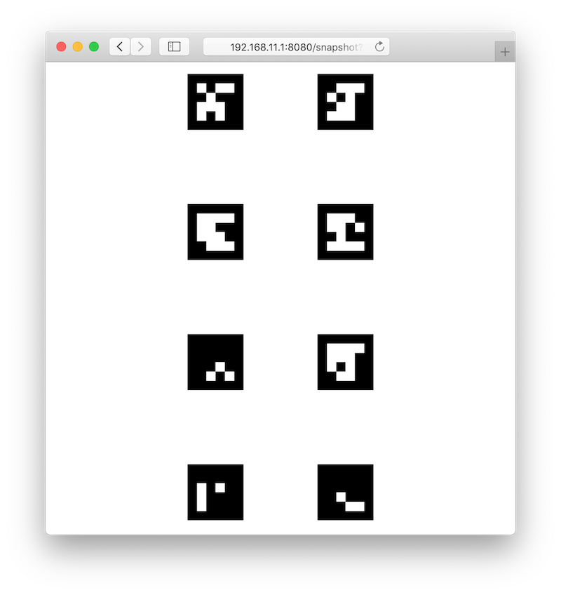
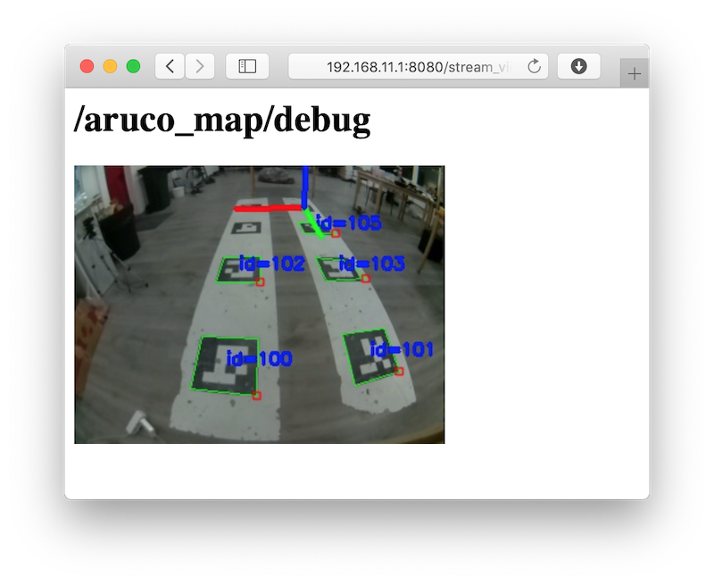
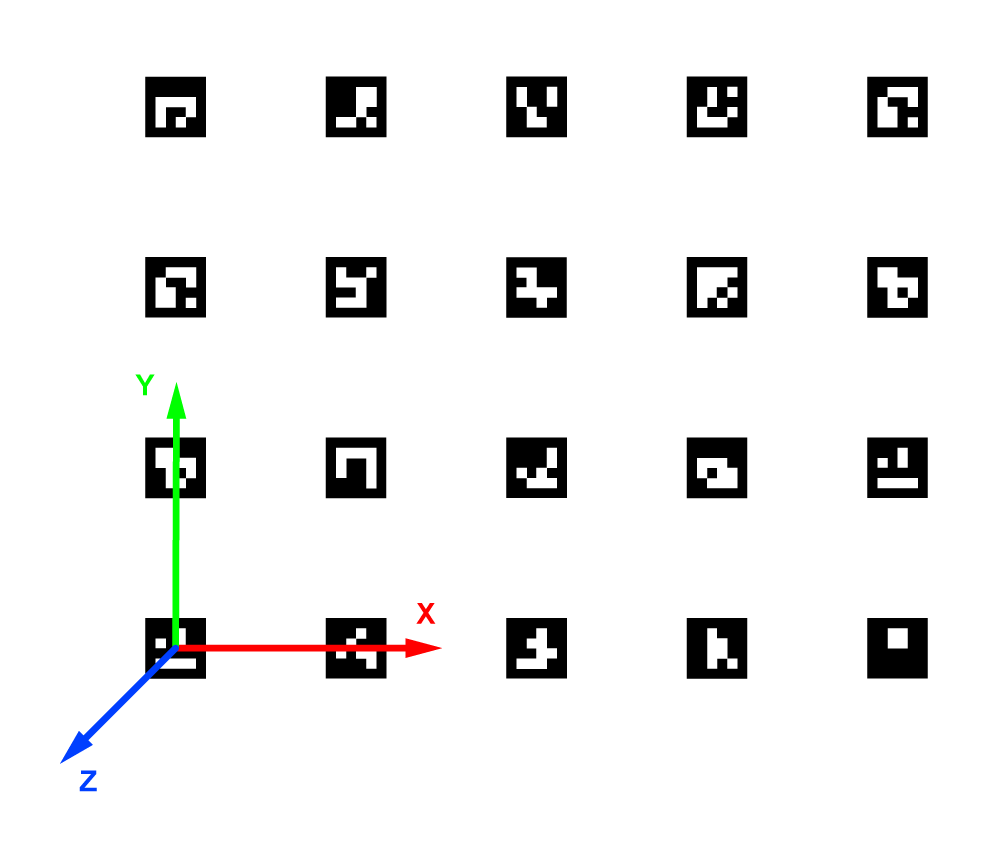

Навигация по картам ArUco-маркеров
Для распознавания маркеров модуль камеры должен быть корректно подключен и сконфигурирован.
Модуль aruco_map распознает карты ArUco-маркеров, как единое целое. Также возможна навигация по картам ArUco-маркеров с использованием механизма Vision Position Estimate (VPE).
Конфигурирование
Для включения распознавания карт маркеров аргументы aruco_map и aruco_detect в файле ~/catkin_ws/src/clever/clever/launch/aruco.launch должны быть в значении true:
<arg name="aruco_detect" default="true"/>
<arg name="aruco_map" default="true"/>
Для включения передачи координат в полетный контроллер по механизму VPE, аргумента aruco_vpe должен быть в значении true:
<arg name="aruco_vpe" default="true"/>
Настройка карты маркеров
Карта загружается из текстового файла, каждая строка которого имеет следующий формат:
id_маркера размер_маркера x y z угол_z угол_y угол_x
Где угол_N – это угол поворота маркера вокруг оси N в радианах.
Путь к файлу с картой задается в параметре map:
<param name="map" value="$(find aruco_pose)/map/map.txt"/>
Смотрите примеры карт маркеров в каталоге ~/catkin_ws/src/clever/aruco_pose/map.
Файл карты может быть сгенерирован с помощью инструмента genmap.py:
rosrun aruco_pose genmap.py length x y dist_x dist_y first > ~/catkin_ws/src/clever/aruco_pose/map/test_map.txt
Где length – размер маркера, x – количество маркеров по оси x, y - количество маркеров по оси y, dist_x – расстояние между центрами маркеров по оси x, y – расстояние между центрами маркеров по оси y, first – ID первого (левого нижнего) маркера, test_map.txt – название файла с картой. Дополнительный ключ --top-left позволяет нумеровать маркеры с левого верхнего угла.
Пример:
rosrun aruco_pose genmap.py 0.33 2 4 1 1 0 > ~/catkin_ws/src/clever/aruco_pose/map/test_map.txt
Проверка
Для контроля карты, по которой в данный момент коптер осуществляет навигацию, можно просмотреть содержимое топика /aruco_map/image. Через браузер его можно просмотреть при помощи web_video_server по ссылке http://192.168.11.1:8080/snapshot?topic=/aruco_map/image:

Клевер публикует текущую позицию распознанной карты в топик aruco_map/pose. Также публикуется TF-фрейм aruco_map (VPE выключен) или aruco_map_detected (VPE включен). Используя топик aruco_map/visualization можно визуализировать текущую карту маркеров в rviz.
Наглядно позиция распознанной карты отображается в топике aruco_map/debug (просмотр доступен по ссылке http://192.168.11.1:8080/stream_viewer?topic=/aruco_map/debug):

Система координат
По соглашению в маркерном поле используется стандартная система координат ENU:
- ось x указывает кверху карты маркеров;
- ось y указывает на правую сторону карты маркеров;
- ось z указывает от плоскости карты маркеров.

Настройка VPE
Для работы механизма Vision Position Estimation необходимы следующие настройки PX4.
При использовании EKF2 (параметр SYS_MC_EST_GROUP = ekf2):
- В параметре
EKF2_AID_MASKвключены флажкиvision position fusion,vision yaw fusion. - Шум угла по зрению:
EKF2_EVA_NOISE= 0.1 rad - Шум позиции по зрению:
EKF2_EVP_NOISE= 0.1 m EKF2_EV_DELAY= 0
При использовании LPE (параметр SYS_MC_EST_GROUP = local_position_estimator, attitude_estimator_q):
- В параметре
LPE_FUSIONвключены флажкиvision position,land detector. - Вес угла по рысканью по зрению:
ATT_W_EXT_HDG= 0.5 - Включена ориентация по Yaw по зрению:
ATT_EXT_HDG_M= 1Vision. - Шумы позиции по зрению:
LPE_VIS_XY= 0.1 m,LPE_VIS_Z= 0.1 m. LPE_VIS_DELAY= 0 sec
Для проверки правильности всех настроек можно воспользоваться утилитой selfcheck.py.
Для использования LPE в Pixhawk необходимо скачать прошивку с названием
px4fmu-v2_lpe.px4.
Полет
При правильной настройке коптер начнет удерживать позицию в режимах POSCTL и OFFBOARD автоматически.
Для автономных полетов можно будет использовать функции navigate, set_position, set_velocity. Для полета в определенные координаты маркерного поля необходимо использовать фрейм aruco_map:
# Вначале необходимо взлететь, чтобы коптер увидел карту меток и появился фрейм aruco_map:
navigate(0, 0, 2, frame_id='body', speed=0.5, auto_arm=True) # взлет на 2 метра
time.sleep(5)
# Полет в координату 2:2 маркерного поля, высота 2 метра
navigate(2, 2, 2, speed=1, frame_id='aruco_map') # полет в координату 2:2, высота 3 метра
Дополнительные настройки
Если коптер нестабильно удерживает позицию по VPE, попробуйте увеличить коэффициенты P PID-регулятора по скорости – параметры MPC_XY_VEL_P и MPC_Z_VEL_P.
Если коптер нестабильно удерживает высоту, попробуйте увеличить коэффициент MPC_Z_VEL_P или лучше подобрать газ висения – MPC_THR_HOVER.
Расположение маркеров на потолке

Для навигации по маркерам, расположенным на потолке, необходимо поставить основную камеру так, чтобы она смотрела вверх и установить соответствующий фрейм камеры.
Также в файле ~/catkin_ws/src/clever/clever/launch/aruco.launch необходимо установить параметр known_tilt в секции aruco_map в значение map_flipped:
<param name="known_tilt" value="map_flipped"/>
При такой конфигурации фрейм aruco_map также окажется перевернутым. Таким образом, для полета на высоту 2 метра ниже потолка, аргумент z нужно устанавливать в 2:
navigate(x=1, y=2, z=1.1, speed=0.5, frame_id='aruco_map')